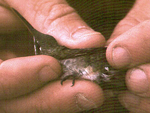
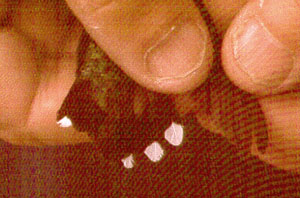

| These photographs accompany records that have been recently submitted to the committee. This record
has been ACCEPTED.  Ruby-throated Hummingbird Archilochus colubris 25 August 1998, Southeast Farallon Island, SF 1999-008 © 1998 Michelle Hester  Ruby-throated Hummingbird Archilochus colubris 25 August 1998, Southeast Farallon Island, SF 1999-008 © 1998 Michelle Hester Back to CBRC Rare Bird Photos |